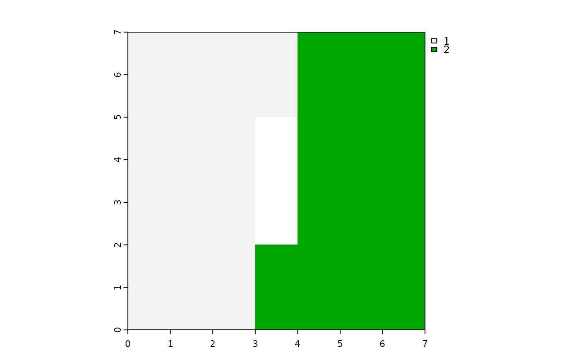

Calculates the co-occurrence vector (cove) spatial signature in a moving window based on a provided categorical raster and a window matrix.
Usage
lsp_signature_mw(
x,
window,
neighbourhood = 4,
ordered = FALSE,
normalization = "pdf",
classes = NULL,
...
)Arguments
- x
SpatRaster
- window
Moving window matrix.
- neighbourhood
The number of directions in which cell adjacencies are considered as neighbours: 4 (rook's case) or 8 (queen's case). The default is 4.
- ordered
The type of pairs considered. Either "ordered" (TRUE) or "unordered" (FALSE). The default is FALSE.
- normalization
Should the output vector be normalized? Either "none" or "pdf". The "pdf" option normalizes a vector to sum to one. The default is "pdf".
- classes
Which classes (categories) should be analyzed? The default is NULL, which means that the classes are calculated directly from the input data and all of them are used in the calculations.
- ...
Additional argument to
terra::focalCpp()
Examples
library(terra)
#> terra 1.7.71
r = rast(matrix(c(rep(1, 23), rep(NA, 3), rep(2, 23)), ncol = 7))
plot(r)

w = matrix(1, 3, 3)
result = lsp_signature_mw(x = r, window = w)
result
#> class : SpatRaster
#> dimensions : 7, 7, 3 (nrow, ncol, nlyr)
#> resolution : 1, 1 (x, y)
#> extent : 0, 7, 0, 7 (xmin, xmax, ymin, ymax)
#> coord. ref. :
#> source(s) : memory
#> names : lyr1, lyr2, lyr3
#> min values : 0, 0.0000000, 0
#> max values : 1, 0.2857143, 1